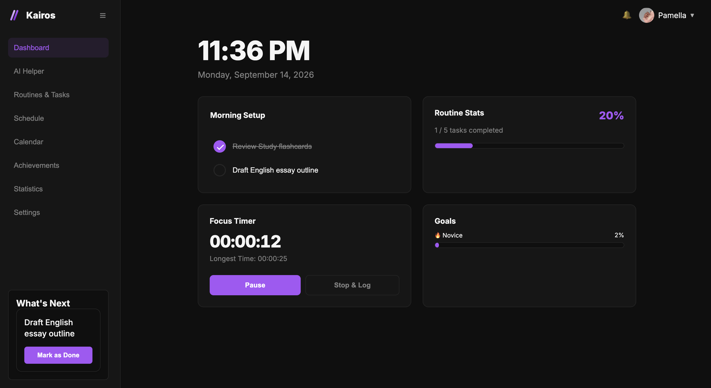
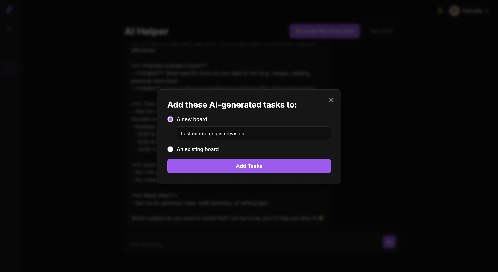

Tasks & recurring routines
Group work by board and section. Track individual recurring occurrences without changing the whole series.
Kairos / Development Beta
Bring your tasks, routines and assignments into one schedule. See what fits, focus on the work, and adjust your plan when things change.

From tasks to a workable day
Keep fixed commitments in place. Give the rest of your work a realistic amount of time, then review the proposed schedule before applying it.
Organise tasks into boards and sections. Add deadlines, durations and recurring routines.
Use your availability and daily limits to see what fits. Check alternatives if there isn’t enough room.
Track focus time, update remaining work and review a revised plan when a deadline changes.
The workspace
A task can have a deadline, a place on your calendar and time logged against it. Work with those details together.
Group work by board and section. Track individual recurring occurrences without changing the whole series.
Move and resize sessions on the calendar. Review deadline conflicts and capacity before applying a new plan.
Start a timer from a task or add time afterwards. Correct logs and update how much work is left.
Find work across boards and dates. Use keyboard shortcuts, with bindings you can change in Accessibility.
AI Helper
Ask Kairos to create a task, find time for revision or help revise a schedule. Review proposed planning changes before applying them.
Open AI Helper
Privacy
Read what Kairos collects, how it is used and how to request your data. Account and privacy controls are available in Settings.
Availability
The desktop web app is available now. Native iOS and Android apps are in development.
Join the mobile launch list for updates and one month free when the iOS and Android apps launch.
Open your planner and start with what you need to do today.